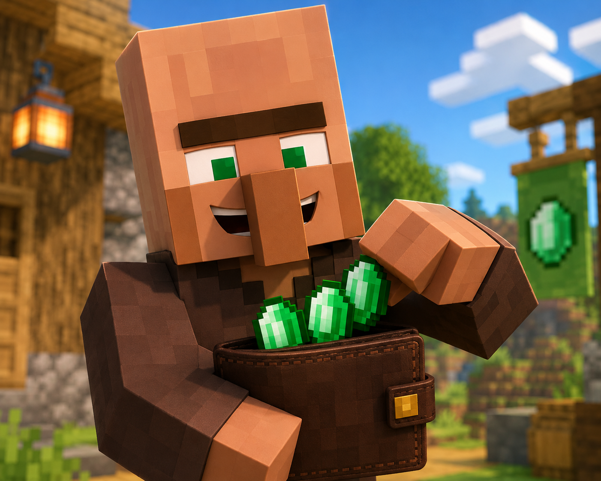
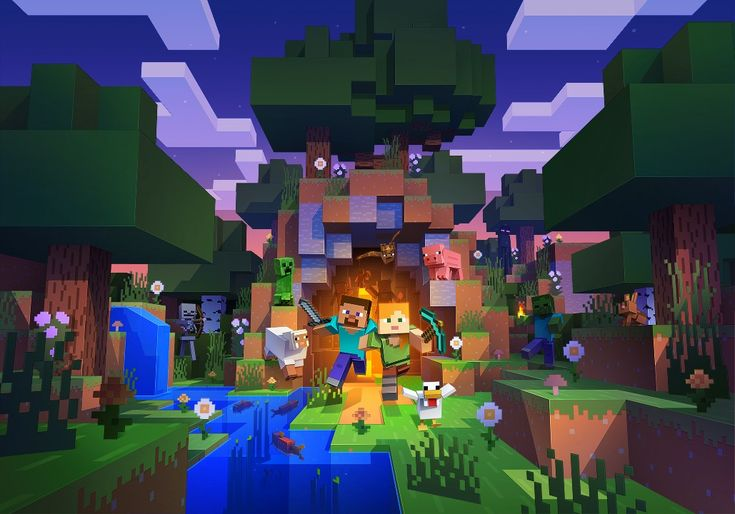
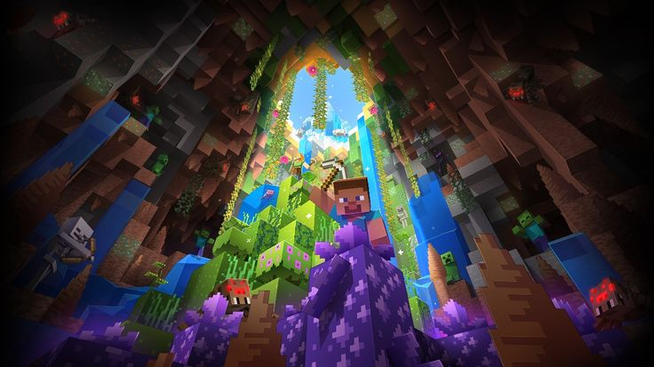
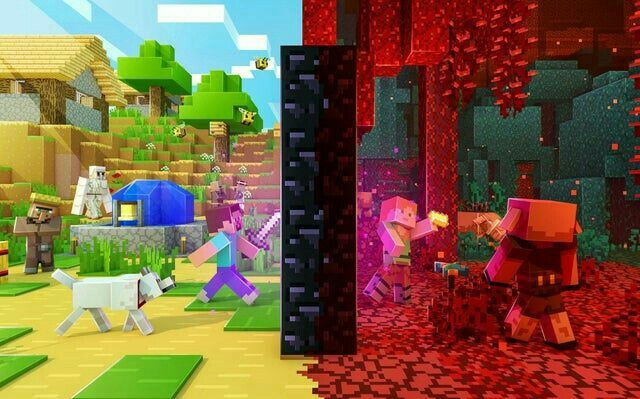
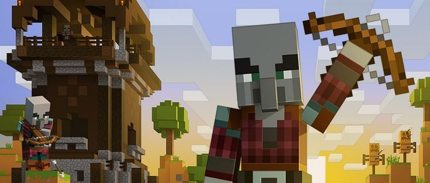
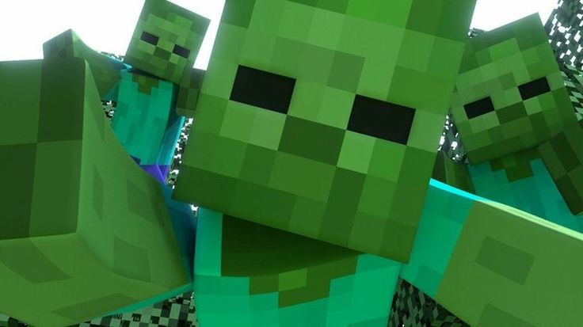

Tenda Villager
Precisando de Itens de qualidade por um valor razoável?
Na Tenda Villager nós temos os itens necessários para sua sobrevivência mundo afora, sabemos
que
muitos
Jogadores necessitam de suprimentos em momentos de emergência ou ferramentas específicas
para
determinado tipo de trabalho e aventura.
Sabendo disso, nosso objetivo existe para atender as suas necessidades de um jeito rápido,
com
um
valor
que cabe
dentro do seu bolso!

Nossa Missão
Sabemos que muitas vezes os Jogadores durante uma aventura ou construção se encontram em
locais
completamente
distantes de sua base, casa ou vila. Então nosso objetivo principal é poder entregar com
eficiência
e
rapidez
quaisquer itens que estiver em nosso alcance.


Queremos garantir que nossos serviços de qualidade e entrega são nossas principais prioridades dentro de nossa corporação, atendendo melhor para atender sempre que precisar.
O principal setor responsável por atender a essa missão importante são os nossos serviços de entrega por meio de nossos Viajantes Parceiros.
Os Viajantes Parceiros são a força de entregadores cujo o único objetivo de seus serviços é
levar
suas
compras online diretamente onde você esteja atualmente, claro que dentro dos limites do
Overworld,
afinal, outras dimensões são muito perigosas para nossa equipe, como por exemplo o Nether.

Damos garantia que, locais do Overworld como todo e qualquer tipo de bioma, seja ele
Caverna,
Montanha,
Deserto, Pântano ou qualquer outro.
Territórios considerados hostis como Postos Pillager, Mansões Pillager, Cidades Ancestrais,
Minas
Abandonadas não serão locais de entrega por representar alto risco de perigo para nossos
Viajantes e
sua
entrega.


E claro, suas compras estarão seguras graças as Lhamas de nossos entregadores, elas podem carregar qualquer coisa em qualquer quantidade, então não se preocupe com a entrega não chegar inteira ou demorada pelo volume da mesma.
Seja um Viajante Parceiro!
Conheça locais novos, desbrave seu Espírito Explorador enquanto coloca dinheiro no bolso. Tornando-se parte do nosso time de Viajantes Parceiros, some conosco no serviço de entrega de itens por todo Overworld!
Nós da Tenda Villager temos o prazer de trabalhar com novas pessoas interessadas em aprender a ser um Viajante Parceiro, dentro do nosso programa de treinamento de Viajantes Parceiros há mais detalhes de como o trabalho será realizado, quais são suas obrigações assim como informações mais detalhadas, clique em "Saiba Mais".